Google Cloud Shell はブラウザ上で動作して、 Google Cloud Platform 上のサービスにアクセス、操作することができるシェルです。
あらかじめ Go の環境が準備されているため、すぐに Go のプログラムを書くことができます。
下記のURLにアクセスします。
https://console.cloud.google.com/?hl=ja
「プロジェクトの選択」をクリックします。
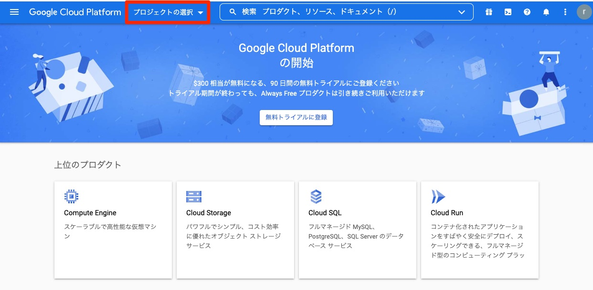
Google Cloud Consoleをはじめて使用するときは、プロジェクトが存在しません。「プロジェクトの選択」ダイアログ右上の「新しいプロジェクト」をクリックし、プロジェクト作成画面に移りましょう。
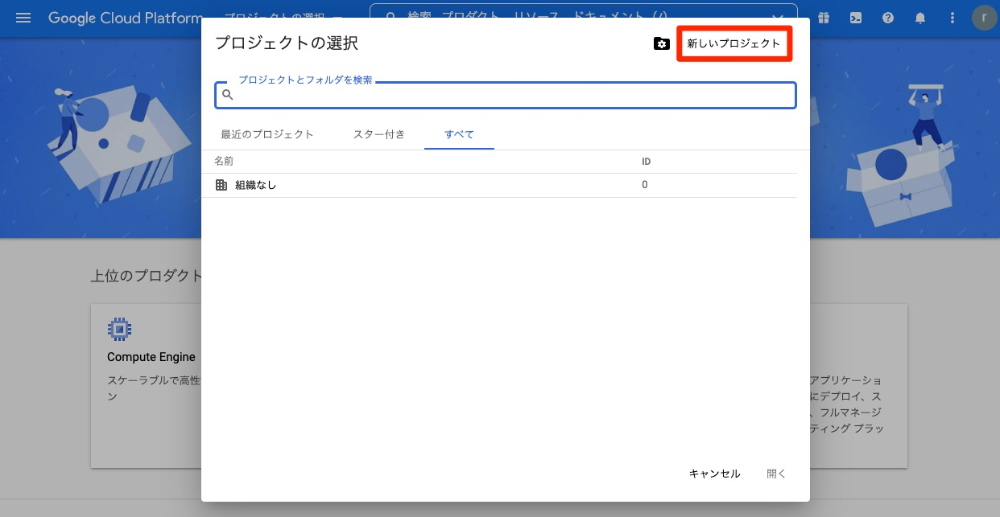
任意の「プロジェクト名」を入力します。プロジェクトIDはグローバルで一意です。プロジェクトIDは後から変更ができないため、変更したい場合は「編集」をクリックし変更しましょう。入力が終りましたら「作成」をクリックします。
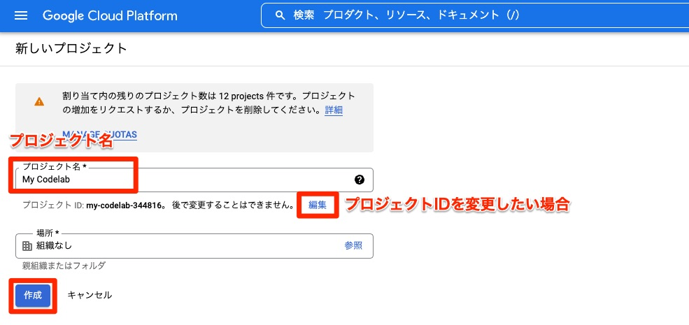
プロジェクトが作成されたら「プロジェクトを選択」をクリックします。
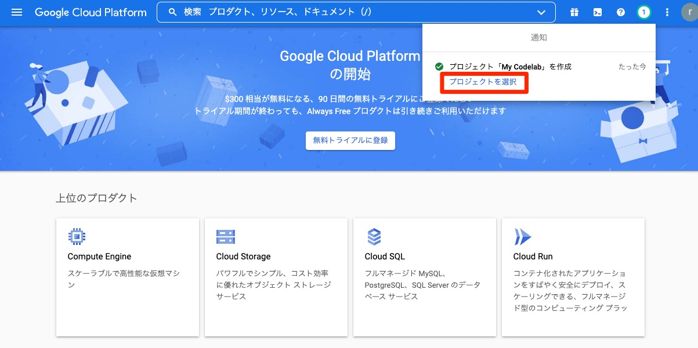
ご自身で作成したプロジェクトが表示されているか、確認しましょう。
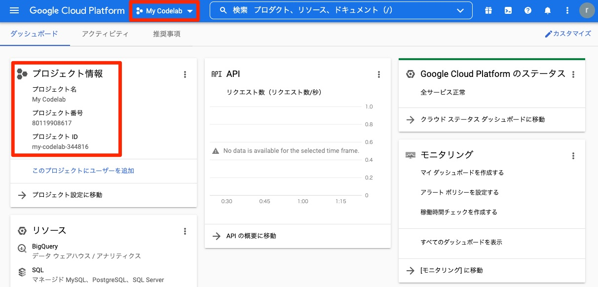
Google Cloud Shell で Go のプログラムを扱う場合は、コンソールを利用します。
「Cloud Shell をアクティブにする」をクリックします。
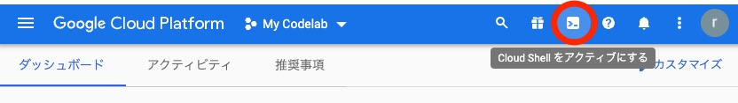
ターミナルウィンドウが立ち上がります。ここから仮想マシンインスタンスへコマンドラインを使ってアクセスできます。
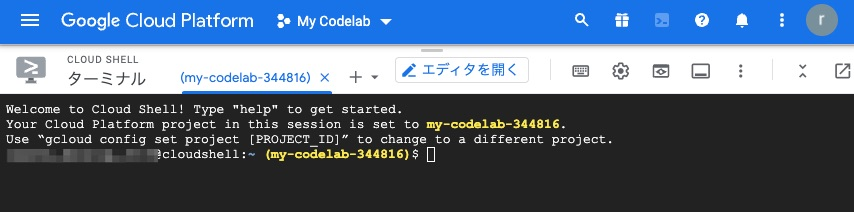
以前にプロジェクトを作成したことがある場合は、現在のプロジェクトが選択されているか、次のコマンドで確認しましょう。
$ gcloud config configurations list今回設定したプロジェクトと異なるプロジェクトが表示された場合は、プロジェクトの切り替えをおこないましょう。
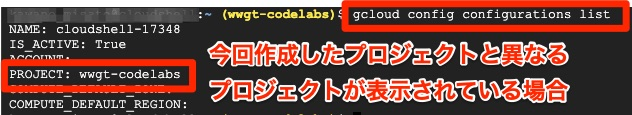
切り替えたいプロジェクトのIDを確認します（先程作成したプロジェクトIDを確認）。
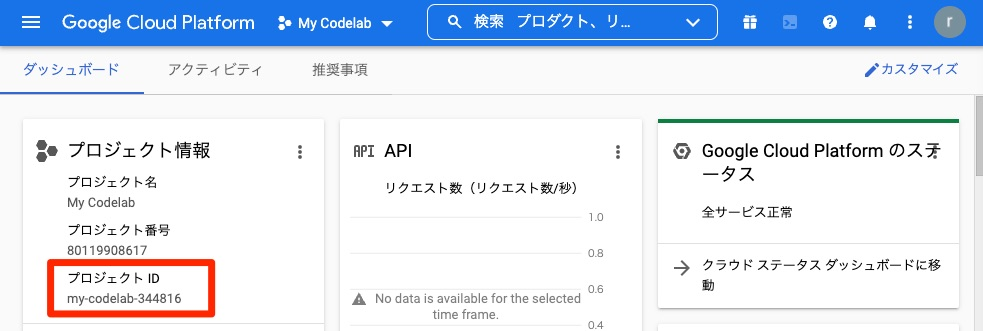
次のコマンドにプロジェクトIDを指定し、プロジェクトの設定をおこないます。
$ gcloud config set project {今回利用するプロジェクトID}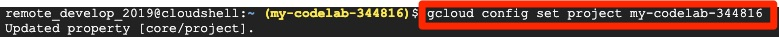
もう一度、プロジェクトの設定を確認しましょう。
$ gcloud config configurations list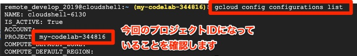
Google Cloud Shell を使って、Go のプログラムを取得します。
プログラムを配置する場所は自由に設定できます。(ここでは develop ディレクトリを作成し、そこで Go のプログラムを取得します)
次のように mkdir コマンドで develop ディレクトリを作成し、 cd コマンドで develop の下に移動します。
$ mkdir develop && cd developコンソールで Go のプログラムを取得するコマンドを入力します。
$ git clone https://github.com/WomenWhoGoTokyo/codelab.git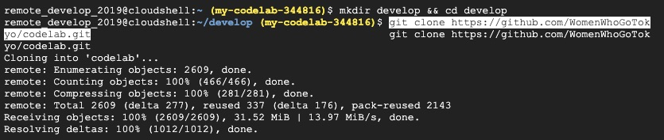
「エディタを開く」をクリックします。
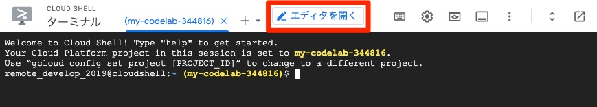
エディタが起動します。
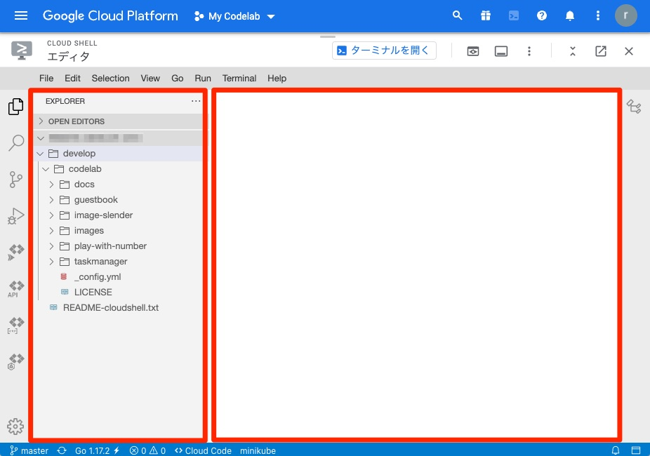
左側がファイルの一覧、右側がエディタです。
それでは、はじめましょう！